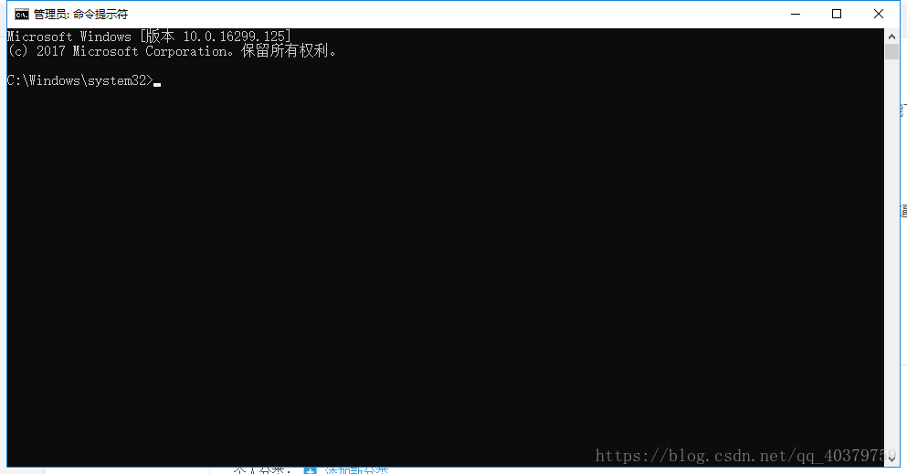
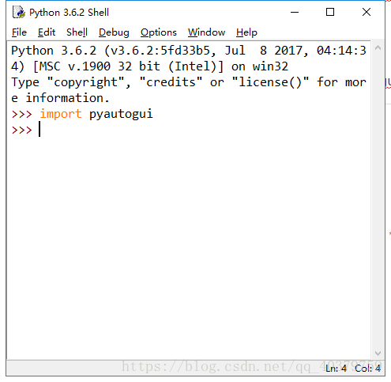
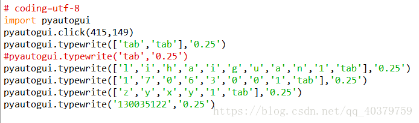

本文的文字及图片来源于网络,仅供学习、交流使用,不具有任何商业用途,版权归原作者所有,如有问题请及时联系我们以作处理。
作者：哈喽哈嘿哈
这篇文章是我的第一篇文章，写的不好的地方，请大家多多指教哈，另外如果你在学python过程中遇到问题，可以去小编的Python交流.裙 ：一久武其而而流一思（数字的谐音）转换下可以找到了，里面有最新Python教程项目可拿,多跟里面的人交流，进步更快哦！
首先，我们的目的是用python做一个自动输入，控制的程序，能用的地方也很少。我是最近在登一些学校的网站的时候要用到一些信息，来回的输入又很麻烦，就在网上找了这样一个功能的python库吧，叫做——pyautogui。
好，咱们下面进行主题
1.安装pyautogui库
我的电脑上用的是win10的python3.6，这个版本不错。（python的环境很不错，直接在官网上就能下，无毒无害，非常牛逼，老爷机也能带的动0）。我们要让我们的python安装pyautogui库。
我一直用命令指示符的方法。很方便的。
首先用管理员的身份进入命令指示符（最好管理员，因为我也不知道会出现什么样问题，管理员很牛逼的），然后就这样。

然后我们直接在他给的语句后面直接输入pip install pyautogui。然后你耐心的等一会，计算机正在安装pyautogui，安装成功的话，会有提示。
2.检验pyautogui的安装成功
打开python的idel，然后导入pyautogui的库 import pyautogui。如果是直接出现>>>就说明安装成功了。就想下面这样。

3.pyautogui的常用函数
这里我就说几个我用在这个小项目里的，pyautogui中有很多函数，功能很强大，大家如果想了解更多的函数使用，可以参考
https://muxuezi.github.io/posts/doc-pyautogui.html
http://blog.topspeedsnail.com/archives/5373
好了，开始介绍喽。
3.1第一个pyautogui.click()
这个函数是用于模拟鼠标的点击动作，比如：pyautogui.click(100,500)就是让鼠标移动到（100，500）这个位置然后点击。
3.2第二个pyautogui.doubleClick()
这个函数和上一个很像，确实，这是双击，注意这里的C是大写的，用法和上面一样
3.3第三个pyautogui.typewrite()
先举个例子吧。
pyautogui.typewrite(['1','7','0','6','3','0','0','1','tab'],'0.25')
前面的数字就是分别打出数字，‘tab’是键盘上的TAB功能键，注意两边是用 [ ] 括起来的。后面的’0.25‘是时间，意思就是打出这几个数字需要多少时间，可大可小很好用。
pyautogui.typewrite('154642',0.25)也可以这么用，直接打出这几个数字，不需要那么复杂，但是这个不能打出键盘功能键。
PyAutoGUI键盘表：
|
‘enter’(或‘return’ 或 ‘\n’) |
回车 |
|
‘esc’ |
ESC键 |
|
‘shiftleft’, ‘shiftright’ |
左右SHIFT键 |
|
‘altleft’, ‘altright’ |
左右ALT键 |
|
‘ctrlleft’, ‘ctrlright’ |
左右CTRL键 |
|
‘tab’ (‘\t’) |
TAB键 |
|
‘backspace’, ‘delete’ |
BACKSPACE 、DELETE键 |
|
‘pageup’, ‘pagedown’ |
PAGE UP 和 PAGE DOWN键 |
|
‘home’, ‘end’ |
HOME 和 END键 |
|
‘up’, ‘down’, ‘left’,‘right’ |
箭头键 |
|
‘f1’, ‘f2’, ‘f3’…. |
F1…….F12键 |
|
‘volumemute’, ‘volumedown’,‘volumeup’ |
有些键盘没有 |
|
‘pause’ |
PAUSE键 |
|
‘capslock’, ‘numlock’,‘scrolllock’ |
CAPS LOCK, NUM LOCK, 和 SCROLLLOCK 键 |
|
‘insert’ |
INS或INSERT键 |
|
‘printscreen’ |
PRTSC 或 PRINT SCREEN键 |
|
‘winleft’, ‘winright’ |
Win键 |
|
‘command’ |
Mac OS X command键 |
pyautogui.typewrite(['enter','a','b','left','x','e'],'0.6')
不过这个函数也有缺陷，它不能输入汉字，只能输入功能键，数字，字母。
那么问题来了，如果我们想输入汉字怎么办？
我想了一个凑合能用的办法，但是不适合大范围输入，如果只要输入个姓名，性别啥的可以完成。
pyautogui.typewrite(['l','i','h','a','i','g','u','a','n','1',],'0.25')
大家可以先切入中文输入法试一下，前面的字母就是用中文输入法输入拼音，后面的'1'就是打字中的选择喽。大家能理解这个意思就行了，是不是感觉很粗糙，嘿嘿嘿。
3.4最后再说一个定位鼠标位置的函数pyautogui.position()
直接在python的idle中输入pyautogui.position()就行了，它就会返回鼠标的位置。
另外如果你在学python过程中经常遇到问题解决不了的话。可以去小编的Python交流.裙 ：一久武其而而流一思（数字的谐音）转换下可以找到了，里面有最新Python教程项目可拿,多跟里面的人交流，进步更快哦！
最后上一个我自己写的抢课的自动输入的程序，大家参考一下哈。
